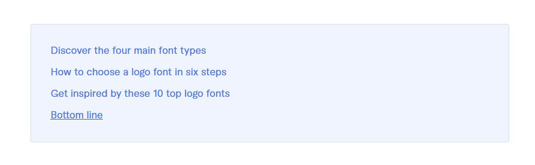

Did you know it takes people 17 milliseconds to form an opinion when they see your brand? That means you truly don't have a second chance to make a first impression. Since logos are often the first glimpse people have of your company, you must be thoughtful about the logo font you use
There are many fonts available, and each one has the potential to convey a powerful message about your brand. How can you know which one is right for you?
Getting to know the basics about four main font types is a helpful first step. You also need to learn the process for selecting your logo fonts and get familiar with some popular fonts to use as inspiration.
Use our guide as an essential primer on how to choose your logo font strategically to maximize brand awareness.
Selecting the right font for your brand requires you to weigh several factors. On the most fundamental level, you must make sure your brand typeface is easy to read to build brand recognition. Additionally, you must consider the emotions and aesthetic you want to convey with your logo.
Learning about the four main font categories—Serif, Sans Serif, Display, and Script—is an excellent place to start. Let's review the basics about each font type and some examples of brands that use them.
You can recognize Serif fonts by the small extra stroke—called a serif—that appears on their letterforms. The additional stroke is a decorative touch that can give serif fonts a traditional, elegant feel. Historically, serif fonts were associated with better readability, so they have been a mainstay of book and newspaper printing.
Serif fonts are often highly legible, making them a good choice for brands trying to build brand recognition.

Like serif fonts, sans serif fonts have several subcategories with distinctive characteristics:
The earliest sans serif fonts, grotesque sans serifs, have a uniform appearance without much variation in stroke width. Often, these fonts resemble serif fonts, minus the extra flourish detailing. They also have a less-refined appearance than their other serif counterparts. Brandon Grotesque and Bambino are two grotesque sans serif fonts.
Walmart uses a custom variant of the Brandon Grotesque font family called Bogle. It represents the simple, down-to-earth, friendly nature of the brand.
Emphasizing simplicity and a streamlined appearance, neo-grotesque sans serifs are some of the most popular fonts today. They are much more refined than grotesque fonts and are a frequent choice for brands wishing to convey a clean, simple aesthetic. Helvetica and Arial are two of the best-known neo-grotesque sans serif fonts.
Helvetica is a classic example of a neo-grotesque font favored by many brands across varied industries. You'll find Helvetica in logos for Target, BMW, Harley Davidson, American Apparel, and JC Penny.
As its name implies, geometric sans serif fonts take inspiration from shapes like circles, squares, and triangles. In general, the emphasis on shapes gives these fonts a very structured feel. Although they originated more than a century ago, geometric fonts can feel forward-looking, making them a top choice for brands that want to convey innovation and momentum. Montserrat and Futura are two examples of the geometric sans serif font family.
One of the most successful and widely-used geometric fonts is Futura. Brands that use Futura include Nike, Go Fund Me, Best Buy, and FedEx.
Humanist sans serif fonts mimic the look of what a person with a pen would create by hand. They tend to be very legible, clean, and clear, making them a good choice for logos and text alike. Gill Sans and Open Sans are examples of humanist sans serif fonts.
A font with clean lines and classic proportions, Gill Sans, is humanist sans serif featured in many logos of brands that want to appear understated yet refined. You'll see it used by the BBC, Rolls Royce, Tommy Hilfiger, and the Tokyo Stock Exchange.
Script fonts resemble handwriting, so these fonts can make brands seem personable and approachable.
Also, since some script fonts have more flourish than their serif and sans serif cousins, script fonts can portray elegance and prestige.
However, the downside to script fonts is that they are often less legible. Allura and Lobster are examples of script fonts.

Coca-Cola's iconic logo is one of the best-known examples of a script font in branding. Script fonts are popular choices among brands that wish to convey creativity, such as Instagram and Sharpie. You'll also find script fonts used by some personal care brands, like Kleenex, or food products companies, like Kellogg's.
Display fonts, also known as decorative fonts, are the most diverse category of fonts. Originally intended for use in large-format displays—like billboards, posters, and headlines—display fonts aim to make an impact
Display fonts transcend styles and can be serif, sans serif, or script.

Often, brands use display fonts to present a quirky, fun, or casual vibe through their logos. Examples include Disney, Fanta, Lego, and Baskin-Robbins.

The right font design holds a lot of power to convey your brand messaging. In fact, choosing your brand font is one of the most important marketing decisions you'll ever make. To make sure you select the right fonts, you can follow six proven steps.
If your brand was a person, how would you describe them? Answering that question can help you clarify your brand's personality.
You should contemplate whether your brand is sophisticated or casual, serious or playful. Do you want to emphasize tradition and legacy or portray yourself as a cutting-edge innovator? These factors and others influence your brand personality and logo font selection.
Another question to ask yourself is who will buy your products. You'll need to consider demographic factors, such as age and gender, along with what motivates them to buy from you.
For example, if you know your audience prefers to shop at high-end boutiques, you may choose an elegant font to appeal to their sophisticated sensibilities. If the target audience for your products is younger children, a fun and friendly logo font could be the way to go.
Can people read your brand name with the chosen font? While you should select a font that matches your brand personality, legibility takes precedence in design. Complex fonts with many embellishments may look attractive, but they can be hard to read and make it difficult to understand your brand messages.
When creating a logo, you need to make sure the font you choose aligns with your brand's overall visual style, including shapes, icons, and colors. However, your logo may not be in color in every marketing application. So you'll need to make sure your logo conveys your brand personality and message even in a simple black and white setting.
Think about whether your logo will primarily appear on printed items, like clothing or signage or digital assets. Also, remember that your logo will need to scale and ensure your font is legible, even at a small size. You may find it helpful to create mockups portraying your logo in different settings to get a feel for what works.
Remember that you only have milliseconds to make an impression in the minds of people who view your logo. That means elaborate logos with multiple fonts can diminish brand awareness. At most, you'll want two fonts in your logo, although a single font is often better.
Having a symbol or icon in your logo along with text can be beneficial but boost visual complexity. You'll want to choose a distinct, clear font in those instances.
Another thing to keep in mind is licensing, which dictates how you can use your chosen font. For the most usage options, you can select an open-source font that is free to use for both personal and commercial projects, which extends to online and print applications. To search for and download free, open-source fonts, you can use Google Fonts.
The other alternative is commercial font licensing, which includes agreements for various environments, including desktop, web, mobile apps, and more. If you go this route, you'll need different licenses for the different settings where you use your logo font.
The reason? A desktop font license only lets you use the font in programs you run on a computer, which means you can employ it to design brochures, advertisements, and other printed materials. By contrast, a webfont license is necessary to use the font on websites or in email marketing.
While there are thousands of fonts available, not all of them are well-suited to logo design. We've rounded up ten popular open-source logo font options to help you get inspired.
A modern serif with classic appeal, Bodoni exudes sophistication. It's the signature font of several prestige brands such as Elizabeth Arden and Harper's Bazaar magazine. The iconic "CK" logo for Calvin Klein also features the Bodoni font.

A highly geometric sans serif created with digital applications in mind, Jost exudes friendliness and Joy. It takes inspiration from the ever-popular Futura font inuse by a vast array of diverse brands from tech giant Cisco to luxury fashion house Dolce and Gabanna to the restaurant chain Domino's Pizza.

At home in both digital and print applications, Lato is one of the most downloaded typefaces on Google Fonts. Conveying both warmth and stability, Lato features rounded details and a strong structure. Lato is a humanist sans serif like Gill Sans, the font used by the London Underground, Phillips, and the Oakland Athletics sports franchise.

If you're looking to emulate the script logo fonts of Sharpie and Instagram, Lobster may be a good option. A calligraphy script font with many alternative styles, Lobster is beautiful, bold, and versatile.

Released in 2018, Poppins has made its mark as an elegant, geometric sans serif font. With 18 different weights ranging from thin to black, Poppins can work for brands that have a playful vibe as well as those that project a professional feel. Poppins is similar to the ITC Avant Garde font that's used by Addidas, Groupon, and Nutella.

Lettering on old posters and signs in the Argentian capital city of Buenos Aires inspired the geometric Montserrat font. Embodying the unmistakable energy of urban typography, Montserrat features nine weights to cover the full gamut of logo design applications. Montserrat is a good substitute for Proxima Nova, a top choice among digital media brands like Mashable, BuzzFeed, and Wired.

A simple, streamlined sans serif font, Nunito communicates openness and approachability. Nunito comes in two variations, one with crisp lines and one with rounded edges on capital letters. It offers a fresh take on the popular Avenir font, used by luminaries such as Disney+ and Bloomberg.

A humanist sans-serif commissioned by Google, Open Sans is clean, modern, and highly legible. It works equally well in large and small sizes and across the full range of digital and print marketing applications. One of the most popular Google Fonts, Open Sans is in use among many top brands, including Mozilla and Chase Bank.

A neo-grotesque sans serif, Roboto has a mechanical base form with friendly open curves. It's no surprise to find Roboto as the default font used on the Android platform. A slab serif version of Roboto is also available for a more, eye-catching bold look.

Love the look of Helvetica--the font of choice for Burberry, Motorola, and dozens of other brands--but want more personality? Work Sans may be a good candidate. Inspired by early grotesque sans serifs, Work Sans features quirky flourishes and relaxed spacing that give it a decidedly playful feel.

Fonts used in logos evoke emotions and convey messages about a brand. When creating a new logo, it's essential to analyze which font best expresses your brand identity and personality. Once you've understood the font style that is best for you, you can combine it with other brand elements such as color schemes and symbols to craft the perfect logo.
An easy tool that can jumpstart your logo creation process is Fiverr Logo Maker. With Fiverr Logo Maker, you can enter a few facts about your brand, express critical aspects of your brand personality, and quickly receive a wide selection of professionally-designed logos to consider. After choosing your logo, you can work with a designer to refine or evolve it for the full spectrum of print and digital marketing applications.
Creating a new logo is an exciting step in launching a new business venture or pursuing a brand refresh. You can take a logo design approach that is both hands-on and backed by professional expertise by using Fiverr Logo Maker.
Create a custom logo for your brand with Fiverr Logo Maker or hire a freelance logo designer expert.